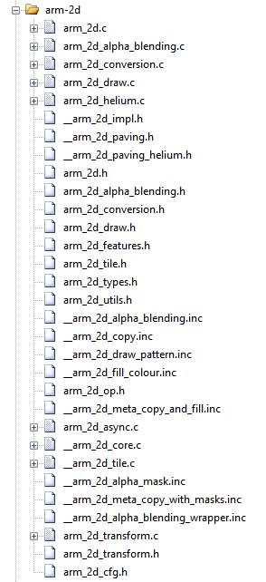

|
Arm-2D
2D Image Processing Library for Cortex-M Processors
|


|
|
Arm-2D
2D Image Processing Library for Cortex-M Processors
|
|
| Branch | Description | Note |
|---|---|---|
| main | The main branch of the repository. It contains the Arm-2D library, examples, templates and a helper library. | |
| developing | The development branch of the master/main branch. | It will be merged into main branch. |
The Arm-2D library provides Low-Level 2D Image Processing Services that are mainly used in Deep Embedded Display system. The supported features include but not limited to:
__ARM_2D_HAS_ANTI_ALIAS_TRANSFORM__ to 1 at compile-time.With more and more smart IoT edge devices introduced to our daily lives, people who are used to the smart-phone-like graphic user interfaces (GUIs) want to have the similar modernized user experience even when using microcontroller-based products. This trend has been long observed and understood by Arm's eco-partners.
As a result, many silicon vendors introduce dedicated hardware accelerators into their microcontroller products to help 2D image processing. Meanwhile, GUI service providers also update their product lines to target microcontroller based GUI applications. Many open-source embedded GUI stacks are hot on GitHub, e.g. LVGL.
In fact, using GUI with microcontrollers isn't new at all. Still, until the recent rise of IoT and AI, people find that the simple and monotonous GUI is really unbearable. The pursuit of user experience similar to that of a smartphone has become a basic requirement for products.
On the other hand, seemingly complicated GUIs are often implemented with simple 2D image-copy and -tiling. Even the translucent effect is not unaffordable for microcontrollers that often run under tens or hundreds of MHz.
Technologies used for 2D graphics have been matured as early as the era of 8-bit Gaming Console. Since 8-bit 6502 can achieve fancy graphics effects, why can't the most advanced Cortex-M processor of the day?
As shown in Figure 1-2, Linux based systems have a complete ecosystem that provides GPU drivers and GUI software services. In contrast, resource-constrained embedded systems do not have such luxury. To enhance the MCU ecosystem, Arm-2D is introduced.
Figure 1-2 Ecosystem Comparison between Rich Embedded and Constraint Embedded System in GUI

When we look at the traditionally embedded GUI architecture(as shown in Figure 1-3 ), there are four layers: 1) the application and designer layer, 2) the GUI software service layer, 3) the rendering layer, and 3) the hardware driver layer.
Arm-2D focuses on accelerating the low-level 2D image processing, and will not touch upper layers of the GUI software stacks, hence avoiding competing with GUI service providers in the same ecosystem. In fact, because Arm has proposed an abstraction layer for the low-level 2D image processing, a whole ecological level of cooperation can be quickly established between chip manufacturers that provide hardware accelerators and software providers that provide GUI services. Everyone can concentrate on enlarging their own values. For example, by adding arm-2d adaptor drivers for their proprietary 2D accelerators silicon vendors can achieve a wide range of support from GUI providers who build/port their GUI stack upon Arm-2D APIs.
Figure 1-3 The Hierarchy of a Typical Embedded GUI System.

The library is targeting ALL Cortex-M processors with/without various hardware 2D image accelerators:
The library is designed with ACI (Arm Custom Instructions) in mind. Accelerations implemented with user-defined instructions can be integrated into the library easily without modifying the existing Arm-2D library or upper-layer software.
The library is designed with 2D image accelerators in mind and following the feature agnostic principle. The Support for accelerators can be added easily without modifying the existing Arm-2D library or upper-layer software.
The library is designed with resource constraints in mind. For Cortex-M processors with 4K~32K SRAM that cannot afford a full-frame-buffer, Arm-2D introduces a feature called Generic Partial Frame-buffer enabling those existing MCUs to run GUI applications by practicing time-space exchange schemes while still enjoying a decent frame rate.
| Projects | Description | Folder | Note |
|---|---|---|---|
| benchmark | It is an ALL-IN-ONE example that demonstrates almost all features provided by Arm-2D. By setting different PFB sizes, you can evaluate the 2D image processing capability for the target system. | examples/benchmark | Can be used as benchmark. |
| watch_panel | It is a dedicated example of a smart-watch-like panel. A pointer and two gears rotate at different angular velocities on a translucent watch panel with a dynamic background. | examples/watch_panel | Can be used as benchmark |
| [template][bare-metal][pfb] | It is a project template for the bare-metal environment. | examples/[template][bare-metal][pfb] | Project Template |
| [template][cmsis-rtos2][pfb] | It is a project template for the RTOS environment, which use CMSIS-RTO2 as an example to show how Arm-2D can work with an RTOS. | examples/[template][cmsis-rtos2][pfb] | Project Template |
There is no public 2D image processing benchmark available for microcontrollers. To facilitate the library development and optimization, we overcome this problem with following methods:
Figure 1-4 A snapshot of benchmark running on Cortex-M4 FVP platform
Figure 1-5 Performance Comparison among some Cortex-M processors
| Folder and File | Type | Description |
|---|---|---|
| Library | Folder | This folder contains the source files and header files of the library. |
| Helper | Folder | This folder contains the source files and header files of helper functions / services. |
| documentation | Folder | This folder contains all the documents. |
| examples | Folder | This folder contains all the example code / projects. |
| README | .md | The README.md you are currently reading. |
| how_to_deploy_the_arm_2d_library | .md | A step by step guidance helping you to deploy the Arm-2D library to your projects. |
| LICENSE | License | The Apache 2.0 License |
| tools | Folder | This folder contains some useful utilities for using the library. For example, img2c.py is a python script that convert a specified picture into the tile data structure. |
Figure 3-1 Private and Public Files

arm_2d_helium.c in the compilation process, as the C source files are constructed with environment detection in pre-processing phase.arm_2d.h is sufficient to get all the services and APIs ready for you.Make sure that the library is initialised by calling arm_2d_init() before using any of the services.
NOTE:
arm_2d_feature.h. For the current stage of the library, please DO NOT override those feature configuration macros.-fms-extensions ), but the library never depends on it. This means that if programmers enable the support of the Microsoft Extensions in their project, they can benefit from it.__WEAK and __OVERRIDE_WEAK are introduced for default functions and extensions; it is similar to the concept of "virtual functions" and "override functions" in C#.arm_2d_async.c is used to override some infrastructure functions in arm_2d.c to support asynchronous mode in the programmers' mode. Override the target low level IO defined with def_low_lv_io() macro that originally defined in arm_2d_op_table.c to add your own version of algorithms and hardware accelerations. For example, if you want to add alpha-blending support for RGB565 using your 2D hardware accelerator, you should do the following steps:
In one of your own C source code, override the definition of __ARM_2D_IO_ALPHA_BLENDING_RGB565
__arm_2d_rgb565_sw_alpha_blending() to your source code as a template of the hardware adaptor and rename it as __arm_2d_rgb565_my_hw_alpha_blending()ARM_2D_ERR_NOT_SUPPORT if the hardware isn't capable to do what is requested.arm_fsm_rt_cpl if the task is done immediately and no need to wait.arm_fsm_rt_async if the task is done asynchronously and later report to arm-2d by calling function __arm_2d_notify_sub_task_cpl().NOTE: The Arm-2D pipeline will keep issuing tasks to your hardware adaptor, please quickly check whether the hardware is capable of doing the work or not, and then add the task (an __arm_2d_sub_task_t object) to a list in First-In-First-Out manner if your hardware adaptor decides to keep it. After that, your hardware accelerator can fetch tasks one by one.
| Name | Description | Location |
|---|---|---|
| README.md | It is the document that you are reading. It provides basic information and guidance for the arm-2d library. | (root) |
| how_to_deploy_the_arm_2d_library.md | A step by step guide that helps you to deploy the library to your existing or new projects. | documentation |
| introduction.md | A relatively detailed introduction for the library, including basic concepts, programmers' mode etc. | documentation |
| how_to_use_tile_operations.md | A detailed document elaborates the APIs dedicated to basic tile operations in the arm-2d library. | documentation |
| how_to_use_alpha_blending_operations.md | A detailed document elaborates the APIs dedicated to alpha-blending services provided by the arm-2d library. | documentation |
| how_to_use_conversion_operations.md | A detailed document elaborates the APIs dedicated to colour space conversion services provided by the arm-2d library. | documentation |
| how_to_use_drawing_operations.md | A detailed document elaborates the APIs that provide basic point-drawing and colour-filling services in the arm-2d library. | documentation |
As mentioned at the beginning, the purpose of this project is to explore and demonstrate the possibilities of delivering smart-phone-like modern GUI using low-cost and resource constraint micro-controllers. We expect that arm-2d could inspire more similar initiatives and engineering practices. Hence, your feedback and thoughts are precious to us.
If you can to spend some time and try the library, please feel free to leave your thoughts. It would be nice to contains following information:
Thank you for your time.
Arm-2D Development Team.
26 July 2022